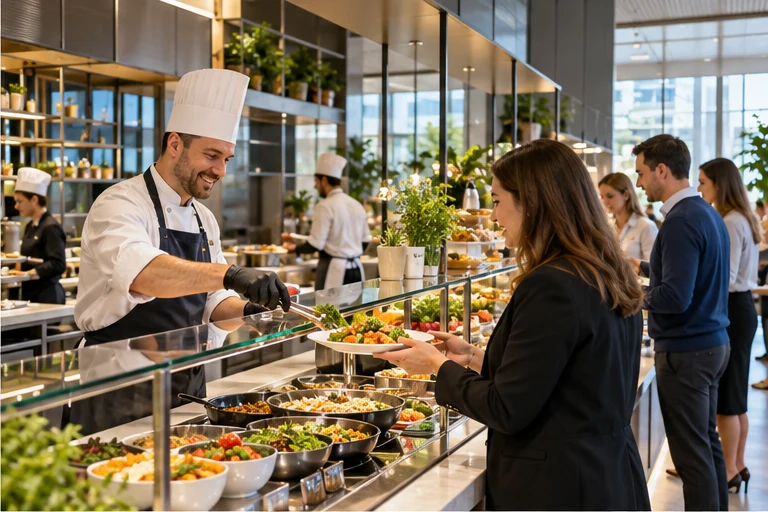

НАПРАВЛЕНИЕ УСЛУГ
Корпоративное питание
Рационы и обслуживание под график предприятия.

Состав услуг
- Завтраки, обеды и ужины
- Ланч-боксы и столы заказов
- VIP-обслуживание
- Протокольные и праздничные мероприятия
Состав и условия обслуживания определяются техническим заданием заказчика.
Для каких объектов
Предприятия, офисы и вахтовые площадки. Решение адаптируется к условиям площадки и потребностям людей.
Что обсудим на старте
Численность людей, сменность, имеющаяся кухня, условия доставки и требования к меню.
Подготовить исходные данные →03 / ПИТАНИЕ И КОМФОРТ
Разные условия.
Продуманный формат.
От столовой для вахтовой команды до корпоративного ресторана. Меню и обслуживание адаптируются к объекту.

ПИТАНИЕ ВАХТОВОЙ КОМАНДЫТёплая атмосфера.
Тёплая атмосфера.
Знакомые блюда.
Разнообразные способы приготовления, меню «От шефа» и программы сбалансированного питания. Пространство и сервис адаптируются к условиям удалённого объекта.
- Рационы под график работы
- Разнообразие ежедневного меню
- Учёт условий и потребностей команды
СЛЕДУЮЩИЙ ШАГОбсудим задачи
Перейти к обсуждению →